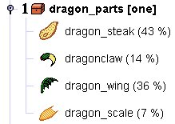

You can recognize this type of treasurelist by the icon:
 ,
as well as the name ending with "[one]". Such a treasurelist produces always
exactly one item from the list. The objects on the list can have different
chances set (the %-values in brackets), which indicate that some items are
more likely to get chosen, and other less likely.
,
as well as the name ending with "[one]". Such a treasurelist produces always
exactly one item from the list. The objects on the list can have different
chances set (the %-values in brackets), which indicate that some items are
more likely to get chosen, and other less likely.
|  |

|
As you can see in the right hand side example, treasurelists may contain yet other treasurelists. If chosen, such sub-lists get processed in recursive fashion. You can view the contents of each sub-list by clicking on the expand-mark.